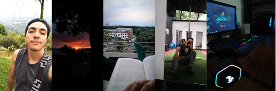

About

Jeronimo was born in Colombia in 2001, he loves the internet, exercise, and reading. He is a
responsible person, intellectual, and eager to learn new things every day. He has won awards in
sports, and always keeps doing studies on the internet and face-to-face studies of literature,
culture, economics, and programming. Jero loves programming and economics, and since his 18
years,
he has focused on improving his skills and knowledge regarding the Frontend because he is
creative,
and Backend, because he loves data. His taste in data and economic analysis is born thanks to
econometrics, Jero loves econometrics, therefore, his strengths are Python and Rstudio,
likewise, he
loves Java, and the management of interfaces that he learned with HTML, CSS, SASS, and
Javascript
along with NodeJs. He likes the console, hence, he has developed skills with git and command
management.
Jero in his free time loves to read literature, economics and, technology worldwide. He is
learning
and improving his English. He exercises and loves to speak or lead, since he has always led
groups,
people, and spaces since he was a child. Jero has Linkedin and
has
all his work experience there.